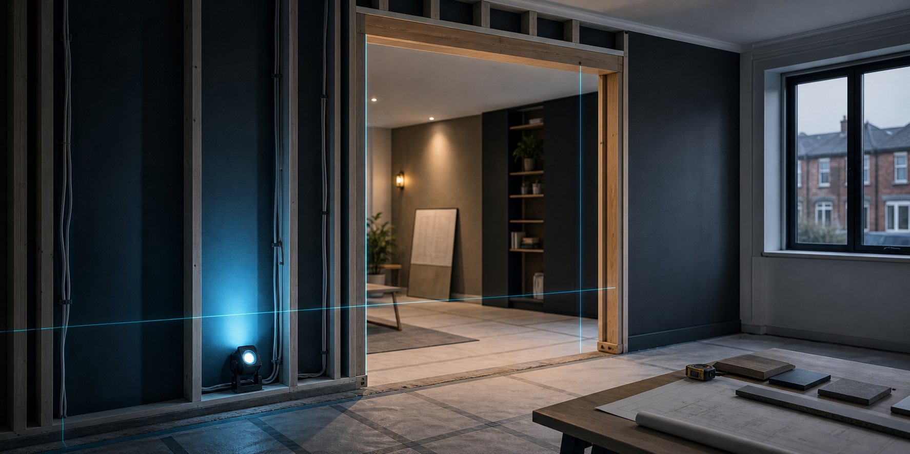
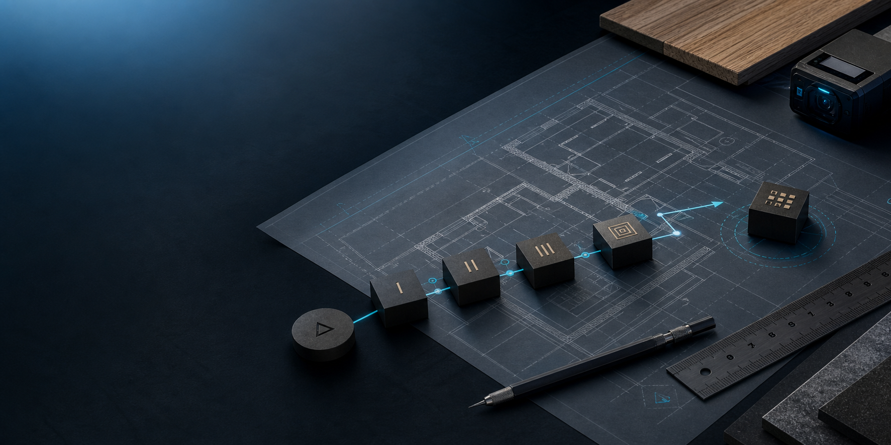
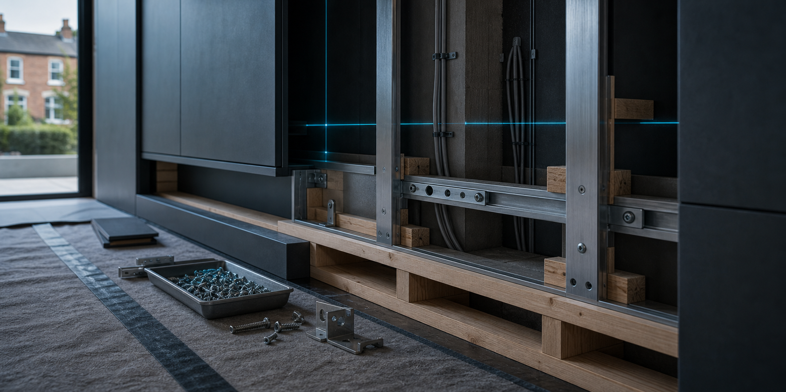

Home improvements
Spaces that need a stronger everyday function.
Practical alterations, room updates, repair-led improvements and building changes that make the property easier to use.

Norvix Builder LTD can support smaller practical works, connected improvement packages and installation-led construction stages.
The same method applies across project sizes: understand the use, protect the property, sequence the work and finish with care.

Practical alterations, room updates, repair-led improvements and building changes that make the property easier to use.

Installation-led construction needs clean preparation, strong fixing decisions and a finish that supports the next trade or final use.
Photos, measurements, access notes and a clear description help Norvix respond with more useful next steps.
Share whether it is a house, flat, rental, exterior area or business property.
Send photos of the area, visible damage, existing surfaces and any constraints.
Explain what should be built, changed, strengthened, installed or finished.
Send them with your message so Norvix can understand the work more quickly.